Large language models (LLMs) have shown strong performance across diverse financial tasks, yet portfolio management (PM) remains poorly benchmarked. Existing benchmarks ignore cross-asset correlation structures and fail to evaluate the complete PM decision pipeline, missing the compounding errors that arise as reasoning propagates through sequential allocation stages.
We introduce PortBench with the following key contributions:
183 instruments across 6 asset classes (equities, bonds, commodities, crypto, real estate, cash) spanning 2015–2025, with daily prices, returns, macro indicators, and news. Inter-class correlations are low, intra-class correlations are high: true diversification means crossing asset-class boundaries, not just picking more tickers.
6,269 correlation-based QA pairs across 7 templates (T1–T7) and 4 difficulty levels, auto-generated from historical data via analytical formulas. Tests correlation reasoning from single-asset prediction to multi-asset constrained allocation to regime-driven rebalancing. Questions and ground truths are derived automatically (no human annotation needed), and new templates can be added on demand.
Models produce S1 (Market Interpretation), S2 (Signal Generation), and S3 (Weight Optimization) decisions at each rebalance date. The sandbox then scores deterministic S4 execution and S5 risk consequences of the proposed allocation. A stateful replay tracks stage scores, weights, and NAV under three investor profiles and three historical stress regimes.
A dual-layer correlation score measures inter-class hedging and intra-class concentration. CEPS penalizes downward score transitions across the five-stage sequence, while paired stage interventions identify direct and downstream effects.
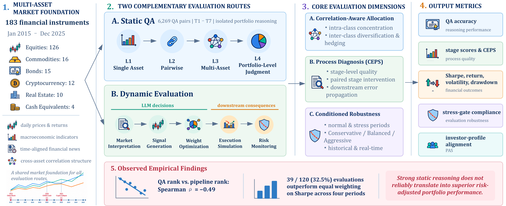
Overview of PortBench. The market base dataset supports two complementary evaluation routes, static QA and dynamic evaluation, covering allocation that accounts for correlations, process diagnosis, and robustness across evaluation periods and investor profiles. The right column lists the output metrics, and the bottom row summarizes the main empirical findings.
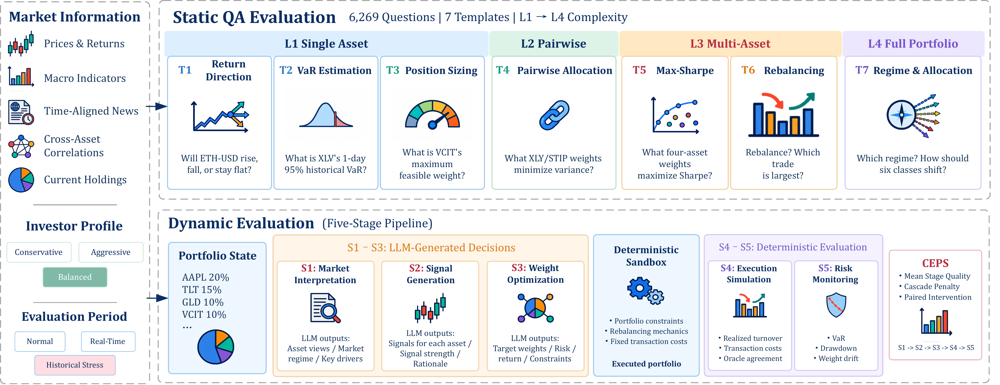
Evaluation framework. Top: static QA covers seven templates, T1 through T7, from single asset tasks at L1 to full portfolio judgment at L4. Bottom: at each rebalance date, the LLM produces S1 through S3, the deterministic sandbox evaluates execution and risk at S4 and S5, and CEPS summarizes the stage scores.
The sections below let you interactively explore each layer of the PortBench. Start with the raw Market Base Dataset, then dive into the two evaluation layers that run on top of it.
The Market Base Dataset covers 183 unique financial instruments spanning 2015–2025 across six heterogeneous asset classes, collected from Yahoo Finance, FRED, and Kaggle. Equities exhibit the broadest coverage (126 tickers), reflecting the diversity of broad-market, sector, and factor ETFs. Commodities (16) and bonds (15) provide representative cross-class hedging opportunities; cryptocurrency (12) captures major and mid-cap digital assets; real estate (10) and cash equivalents (4) round out the defensive allocation universe.
Correlation analysis reveals that inter-class average correlations are generally low while intra-class correlations are strongly positive. True diversification requires crossing asset class boundaries, not merely spreading across tickers within the same class, directly motivating the two-layer correlation scoring design.
183 instruments across 6 asset classes, daily data 2015–2025. Each monthly snapshot includes macro indicators, per-asset price summaries, and cross-class correlations. Select a date to see the full snapshot. To keep the layout compact, the six asset class tables are collapsed by default: click any class header to expand and inspect its representative tickers.
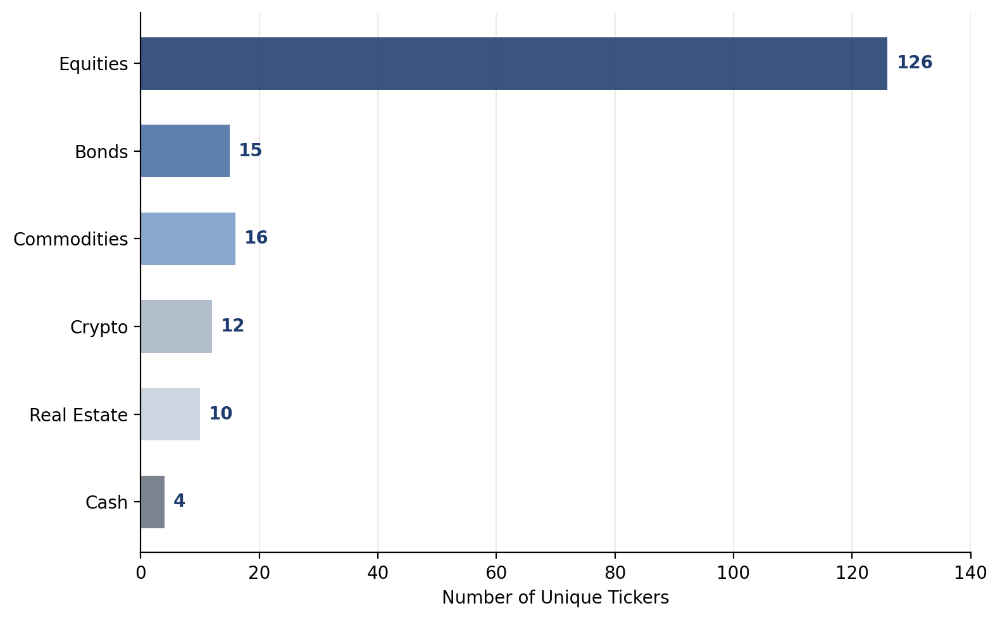
Number of unique tickers/series per asset class.
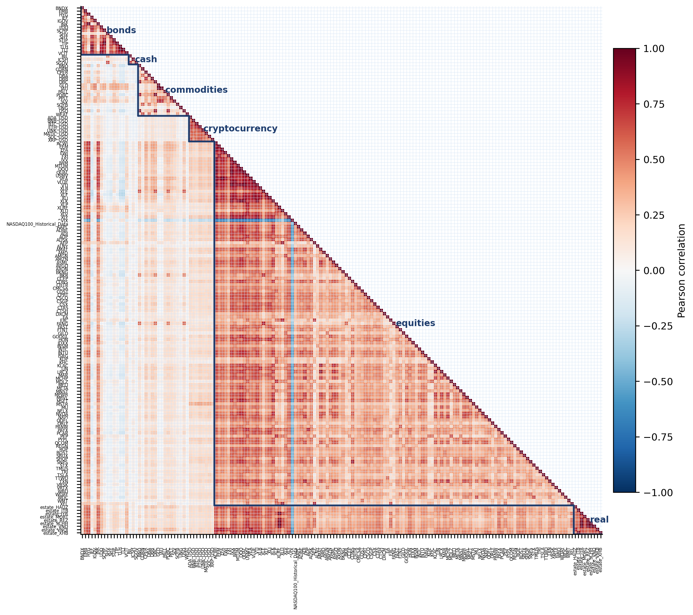
Pairwise Pearson correlation matrix (daily returns, 2015–2022).
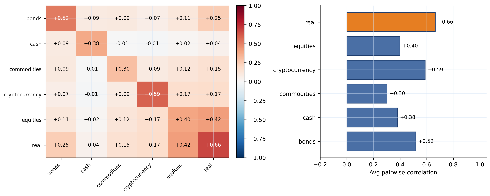
Mean pairwise correlation: each class vs. all others.
Base = 100 at first listing date. Each panel shows representative instruments from one asset class.
The evaluation framework has two complementary layers. Switch between the tabs below to explore the QA Dataset and the Pipeline Evaluation in detail. Every component is objective, traceable, and scalable: QA pairs are auto-generated without human annotation, and pipeline scoring uses a lookback oracle (trailing data available at the decision date; no future returns in the main rankings), eliminating oracle leakage and enabling seamless extension to new periods and assets.
At each rebalance date a MarketSnapshot is constructed and passed to the LLM
for five-stage evaluation (S1–S5) under the Balanced profile.
Traces use the lookback S3 oracle (no future returns), matching the paper’s main pipeline results.
Select a model, market scenario, and date to see the model’s input and stage-by-stage output vs. ground truth.
At each rebalance date the LLM executes S1–S5 sequentially. LLMs and classical baselines share the identical backtest environment for controlled comparison.
Prior benchmarks obscure early reasoning failures by averaging scores. CEPS penalizes error cascades, a strong stage followed by a weak one, more heavily than uniform mediocrity, capturing the operational reality that a perfectly interpreted market view is worthless if signal generation immediately fails.
Main-text rankings use a lookback oracle (trailing 60-day returns available at the decision date; no future returns). An ex-post variant that optimizes on realized forward returns is reported only as an appendix diagnostic.
Two models with identical average stage scores (0.434) receive different CEPS scores because one exhibits downward transitions while the other is uniform across stages.
| S1 | S2 | S3 | S4 | S5 | Avg | |
|---|---|---|---|---|---|---|
| Model A (cascade) | 0.792 | 0.506 | 0.307 | 0.086 | 0.480 | 0.434 |
| Model B (uniform) | 0.434 | 0.434 | 0.434 | 0.434 | 0.434 | 0.434 |
| Model A (cascade) | Model B (uniform) | |
|---|---|---|
| Isolated avg | 0.434 | 0.434 |
| Cascade drops | (0.792−0.506) + (0.506−0.307) + (0.307−0.086) = 0.286 + 0.199 + 0.221 = 0.706 | 0 |
| Penalty (lambda=0.1) | 0.1 × 0.706 = 0.071 | 0 |
| CEPS | 0.434 − 0.071 = 0.363 | 0.434 − 0 = 0.434 |
CEPS is evaluated under three investor risk profiles with escalating risk tolerance, and back-tested across three historical stress regimes to assess robustness when market conditions deteriorate sharply.
Each profile is tested under three historical stress regimes:
A model passes the stress gate for a given profile if its maximum drawdown across all three regimes stays within the profile's tolerance. 70% of models (7 of 10) fail the Conservative stress gate, concentrated in the 2022 Crypto Collapse, where small crypto exposures compliant with allocation caps amplify into double-digit drawdowns (compliance trap: every process constraint satisfied, outcome safety violated).
The table below reports per-stage scores, CEPS, and financial outcomes for all ten LLMs and six classical baselines (normal period, 2024), including Black–Litterman. Bold = column best within each profile. Select a profile to view results. Under Conservative, 70% of models fail the stress gate; all pass under Balanced and Aggressive.
| Model | Pipeline Scores | CEPS | Financial Outcomes | Gate | |||||||
|---|---|---|---|---|---|---|---|---|---|---|---|
| S1 | S2 | S3 | S4 | S5 | Sharpe | Ret% | MaxDD% | Vol% | |||
| GLM-5.1 | .769 | .458 | .307 | .239 | .314 | .356 | 0.652 | 10.96 | −7.24 | 10.04 | ✗ |
| Kimi-K2.6 | .771 | .388 | .301 | .199 | .331 | .330 | 0.631 | 10.18 | −5.87 | 9.16 | ✗ |
| Qwen3.6-Plus | .780 | .496 | .307 | .089 | .319 | .328 | 0.748 | 12.95 | −8.52 | 11.22 | ✓ |
| Qwen3.6-35B-A3B | .756 | .395 | .299 | .138 | .339 | .320 | 1.068 | 14.28 | −5.08 | 8.68 | ✗ |
| Hunyuan3-Preview | .782 | .499 | .290 | .033 | .317 | .308 | 0.800 | 11.60 | −5.17 | 8.72 | ✗ |
| DeepSeek-V4-Flash | .744 | .302 | .293 | .180 | .300 | .295 | 0.250 | 6.19 | −7.11 | 8.73 | ✗ |
| Doubao-Seed-2.0-Pro | .753 | .406 | .295 | .057 | .315 | .294 | 0.939 | 12.11 | −4.75 | 7.82 | ✗ |
| Qwen3.7-Max | .752 | .393 | .286 | .086 | .299 | .293 | 0.823 | 11.47 | −5.25 | 8.30 | ✓ |
| DeepSeek-V4-Pro | .751 | .321 | .306 | .115 | .306 | .291 | 0.624 | 9.79 | −6.02 | 8.65 | ✗ |
| Doubao-Seed-2.0-Lite | .755 | .342 | .297 | .053 | .300 | .277 | 0.863 | 11.84 | −5.64 | 8.29 | ✓ |
| Equal-Weight (EqW) | N/A | N/A | N/A | N/A | N/A | N/A | 0.863 | 11.54 | −4.48 | 7.95 | N/A |
| 60/40 | N/A | N/A | N/A | N/A | N/A | N/A | 0.841 | 11.95 | −4.27 | 8.65 | N/A |
| Risk Parity | N/A | N/A | N/A | N/A | N/A | N/A | 0.603 | 6.01 | −1.39 | 2.77 | N/A |
| Cov. Risk Parity | N/A | N/A | N/A | N/A | N/A | N/A | 0.343 | 5.09 | −1.43 | 2.39 | N/A |
| Min-Variance | N/A | N/A | N/A | N/A | N/A | N/A | −0.043 | 4.11 | −1.28 | 2.10 | N/A |
| Black–Litterman | N/A | N/A | N/A | N/A | N/A | N/A | −0.173 | 3.06 | −4.48 | 5.47 | N/A |
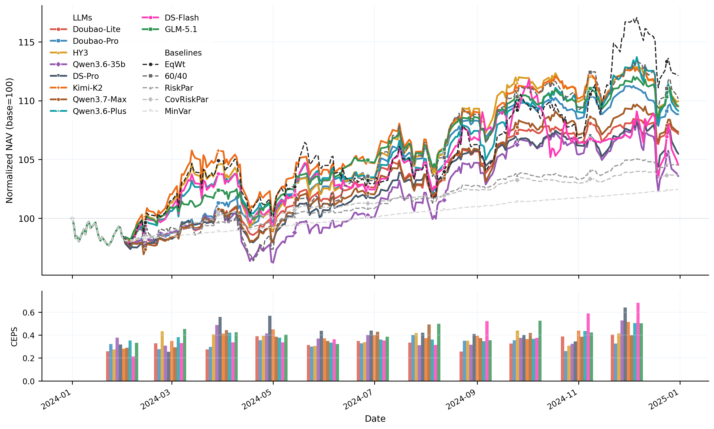
The stress gate: a model passes for a given profile if its maximum drawdown across all three historical stress regimes stays within that profile’s tolerance. Under Balanced and Aggressive, all models pass; under Conservative, seven of ten fail.
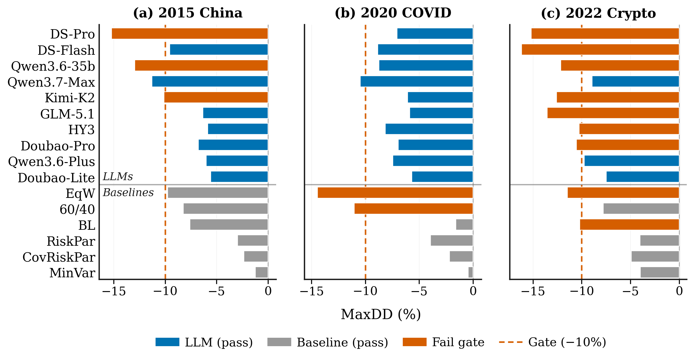
Maximum drawdown under the Conservative profile in each stress regime. The dashed line marks the 10% tolerance; red bars breach it.
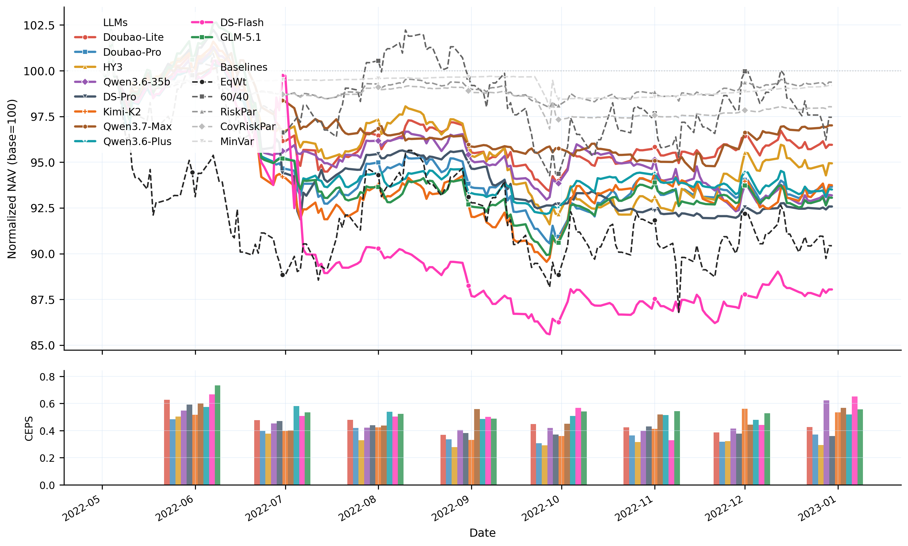
2022 Crypto Collapse NAV (Conservative)—the regime where LLMs perform worst: no LLM beats EqW. Vertical lines mark Terra/LUNA, 3AC/Celsius, Jackson Hole, and FTX.
In 2020, EqW Sharpe was near zero (0.045) and recovery-tilted models gained substantially (mean ΔSharpe +0.72). In 2024, EqW was strong (0.863), making active bets hard to justify. In the prolonged 2022 bear, no pair beat EqW (mean gap −0.93).
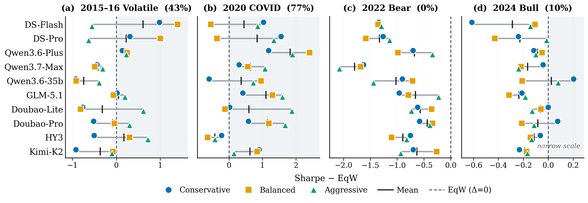
Sharpe relative to EqW across four market periods. Light shading marks Δ>0 (beat EqW). Percentages in titles are the fraction of model–profile pairs that beat EqW in that period.
Historical-only evaluation risks data leakage from pretraining. PortBench also supports real-time evaluation: at each decision date the model receives only data available through the previous close. We run daily rebalancing over 12 trading days (2026-07-16–07-31) under the Balanced profile for six models. Real-time rankings differ from the 2024 monthly block: Kimi-K2.6 leads lookback CEPS (.420), while S4 remains weak (.05–.16), consistent with under-trading.
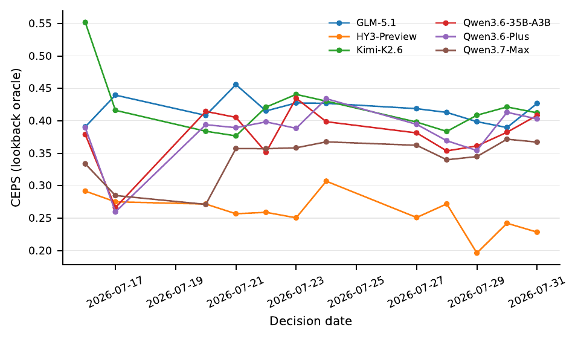
Per-decision lookback CEPS over the 12-day real-time window (Balanced).
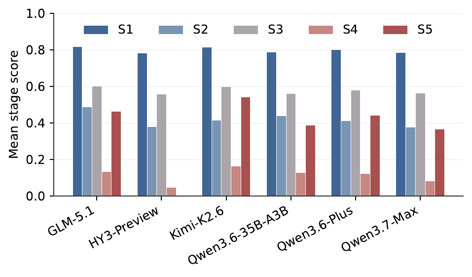
Mean lookback stage scores (S1–S5) over the 12 real-time decision dates.
Per-template accuracy reveals a sharp divide between formula-driven tasks (T4, T5) and judgment-driven ones (T1, T2, T6, T7)—the QA-side counterpart to the pipeline results above.
Per-template accuracy (full & restricted covariance conditions), formula vs. judgment averages, and accuracy by market regime. Bold = column best. Pink rows = Mean < 0.65.
| Model | Per-Template (Full) | Mean | Restricted | Task Type | Market Regime | ||||||||||
|---|---|---|---|---|---|---|---|---|---|---|---|---|---|---|---|
| T1 | T2 | T3 | T4 | T5 | T6 | T7 | T4r | T5r | F | J | Bull | Bear | Side. | ||
| DeepSeek-V4-Flash | .520 | .843 | .945 | 1.00 | .932 | .652 | .843 | .819 | .975 | .860 | .966 | .715 | .827 | .823 | .812 |
| Qwen3.7-Max | .500 | .859 | .951 | 1.00 | .954 | .724 | .742 | .819 | 1.00 | .990 | .977 | .706 | .814 | .863 | .810 |
| DeepSeek-V4-Pro | .520 | .837 | .963 | 1.00 | .992 | .652 | .760 | .818 | 1.00 | .660 | .996 | .692 | .844 | .846 | .802 |
| Doubao-Seed-2.0-Lite | .460 | .798 | .957 | .956 | .897 | .810 | .747 | .804 | .961 | .940 | .927 | .704 | .780 | .846 | .806 |
| Doubao-Seed-2.0-Pro | .440 | .847 | .963 | .991 | .912 | .824 | .530 | .787 | .979 | .923 | .952 | .660 | .764 | .806 | .792 |
| Qwen3.6-Plus | .440 | .858 | .968 | 1.00 | .804 | .640 | .768 | .783 | 1.00 | .810 | .902 | .677 | .799 | .801 | .771 |
| GLM-5.1 | .440 | .855 | .964 | 1.00 | .421 | .882 | .738 | .757 | 1.00 | .531 | .711 | .729 | .778 | .765 | .746 |
| Qwen3.6-35B-A3B | .460 | .808 | .961 | 1.00 | .230 | .564 | .763 | .684 | 1.00 | .320 | .615 | .649 | .714 | .729 | .662 |
| Hunyuan3-Preview | .460 | .386 | .336 | .975 | .958 | .468 | .783 | .624 | .982 | .974 | .967 | .524 | .664 | .663 | .597 |
| Kimi-K2.6 | .420 | .422 | .493 | .956 | .280 | .684 | .320 | .511 | .978 | .710 | .618 | .462 | .556 | .531 | .487 |
F = mean(T4,T5) formula-driven; J = mean(T1,T2,T6,T7) judgment-driven. Restricted T4r and T5r withhold covariance statistics. Eight of ten models improve, showing that the supplied matrix can hinder answer generation; this ablation does not separate table parsing from numerical reasoning.
| Model | QA Mean | QA Rank | CEPSbal | CEPS Rank | ΔRank |
|---|---|---|---|---|---|
| DeepSeek-V4-Flash | .819 | 1 | .273 | 10 | −9 |
| Qwen3.7-Max | .819 | 2 | .335 | 5 | −3 |
| DeepSeek-V4-Pro | .818 | 3 | .320 | 7 | −4 |
| Doubao-Seed-2.0-Lite | .804 | 4 | .275 | 9 | −5 |
| Doubao-Seed-2.0-Pro | .787 | 5 | .322 | 6 | −1 |
| Qwen3.6-Plus | .783 | 6 | .364 | 2 | +4 |
| GLM-5.1 | .757 | 7 | .430 | 1 | +6 |
| Qwen3.6-35B-A3B | .684 | 8 | .335 | 4 | +4 |
| Hunyuan3-Preview | .624 | 9 | .314 | 8 | +1 |
| Kimi-K2.6 | .511 | 10 | .341 | 3 | +7 |
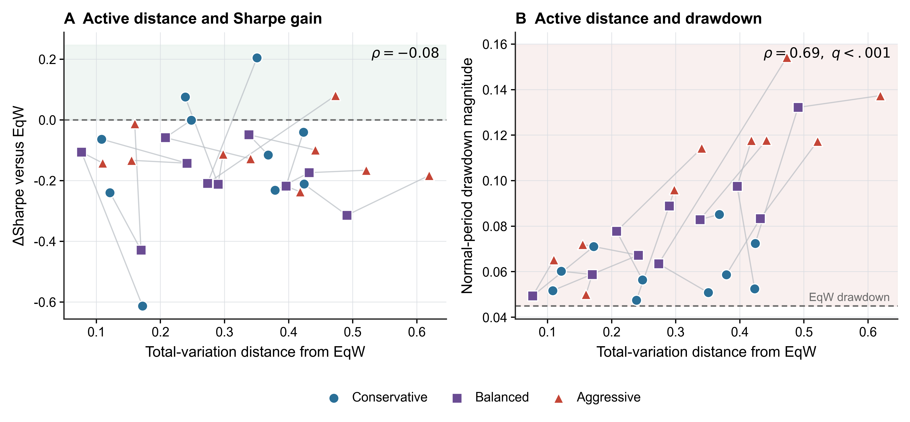
Allocation distance and realized outcomes. Larger deviations from equal weight increase risk without a corresponding Sharpe advantage.
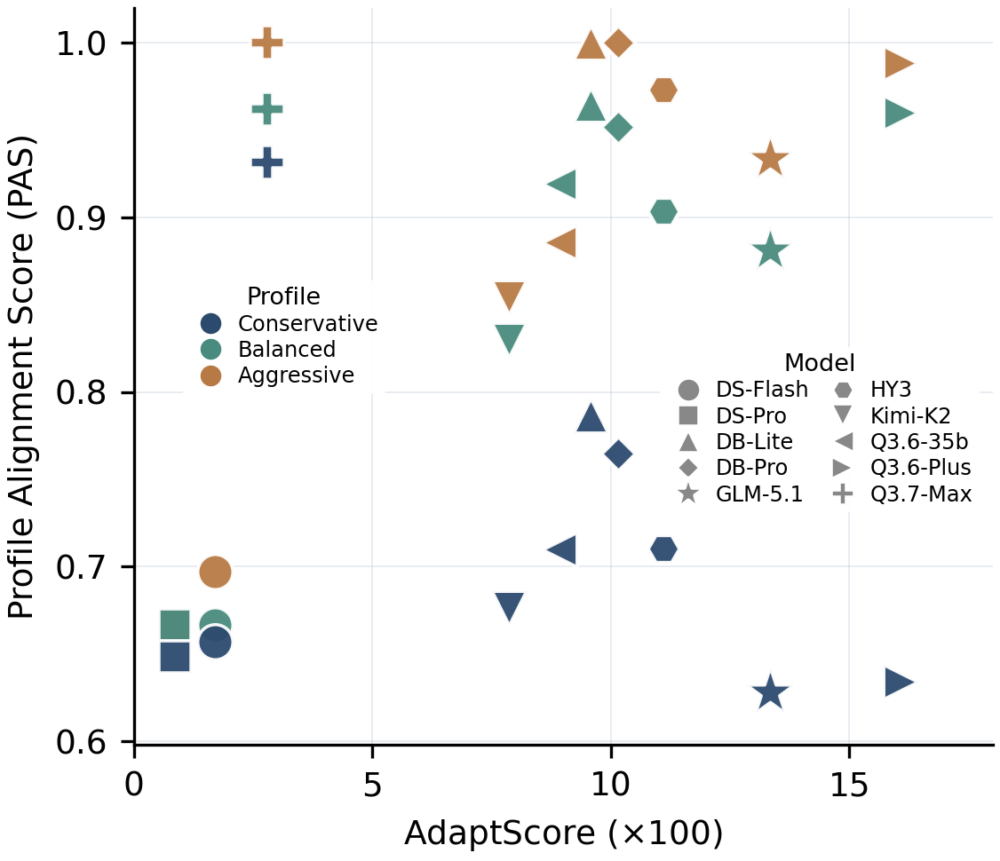
AdaptScore vs. PAS by profile. Qwen3.7-Max achieves true cross-profile compliance (AdaptScore 0.028); high-AdaptScore models such as Qwen3.6-Plus reach near-perfect aggressive PAS but collapse under conservative constraints.
Replacing one stage output with its oracle counterpart isolates how repairs propagate through the remaining pipeline. In normal periods, repairing S1 strongly improves S2 (+0.626, 95% CI [0.607, 0.644]) but has only a small mean effect on S3 (+0.017), with 40 of 110 branches worsening. Under stress, downstream risk effects can reverse: S2 and S3 repairs reduce S5 by 0.059 and 0.056, respectively.
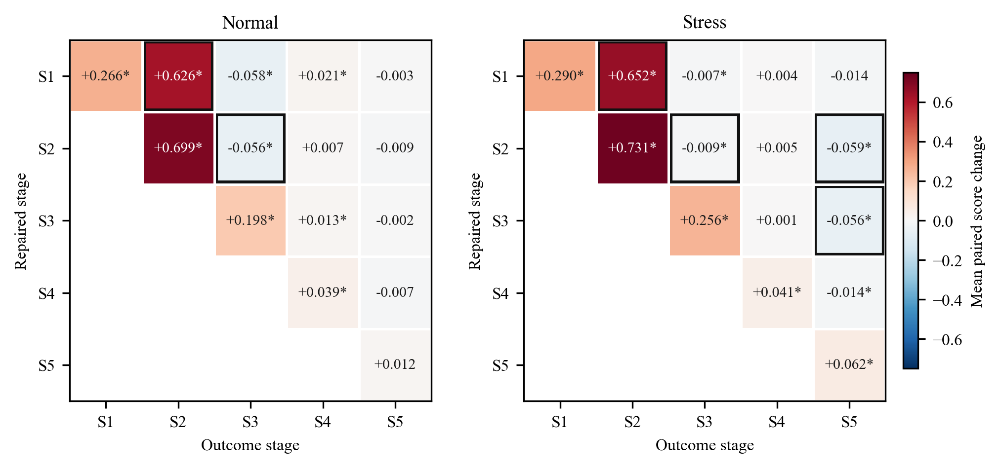
Mean direct and downstream effects from paired stage repairs in normal and stress settings.
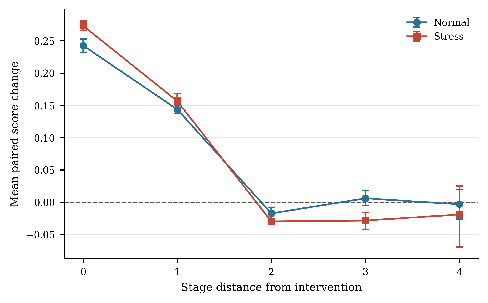
Repair influence attenuates with stage distance and is not uniformly beneficial.
@article{zhao2026portbench,
title={PortBench: A Correlation-Aware, Full-Pipeline Benchmark for LLM-Driven Portfolio Management},
author={Zhao, Yuxuan and Chen, Sijia and Su, Ningxin},
journal={arXiv preprint arXiv:2605.27887},
year={2026}
}